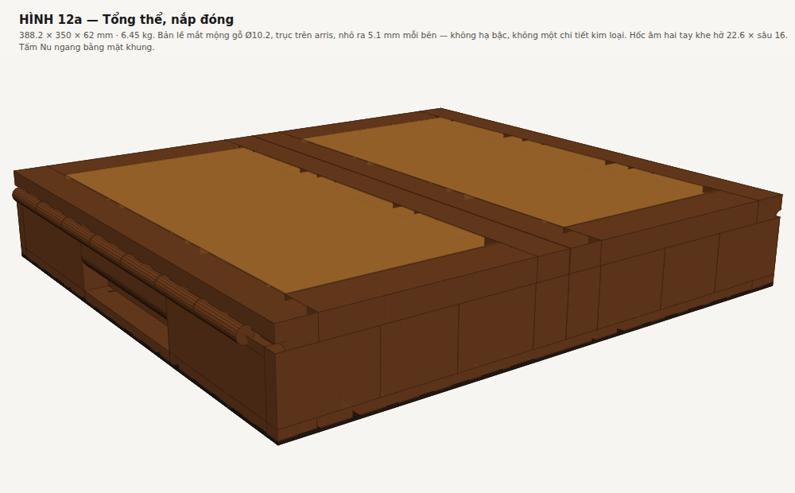
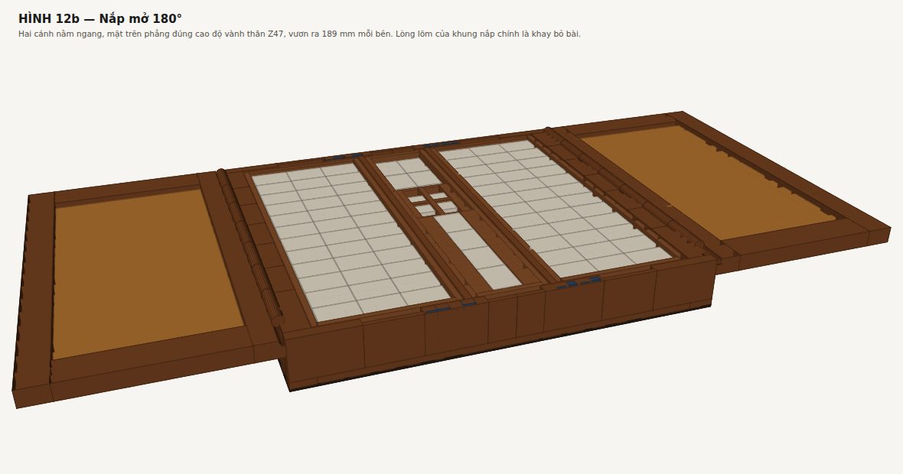

Tài liệu này ghi lại các quyết định chốt trong phiên làm việc 29-08-2026, và — quan trọng hơn — những chỗ các tài liệu trước đó sai hoặc đã hết hiệu lực. Đọc nó trước khi đọc bốn tài liệu cũ.
| Rev B | Chốt hiện tại | Nguồn | |
|---|---|---|---|
| Phủ bì | 354 × 350 × 80 | 388.2 × 350 × 62 (thân 378) | box_spec.py |
| Chuỗi X | 10+126+6+70+6+126+10 | 22+126+6+70+6+126+22 | width_options.py |
| Phương án xách | (chưa có) | C — hốc âm hai tay | handle_option_c.py |
| Đáy hộp | 8 | 6 | detail_features.py |
| Tấm nắp Nu | 10, thụt 3 dưới mặt khung | tấm NÂNG 10 (mộng 7) — ngang bằng mặt khung | lid_solid_calc.py |
| Nắp | 18 → 8 (vát) | đều 15, không vát | box_spec.py |
| Trục xoay bản lề | không định nghĩa | P = (0.0 , 47) — đúng trên arris | hinge_kinematics.py |
| Bản lề | mắt mộng gỗ + chốt Ø6 | mắt mộng gỗ + chốt gỗ Ø5 | hinge_kinematics.py |
| Ống gỗ | Ø18 | Ø10.2, nhô ra 5.1 mm mỗi bên, KHÔNG hạ bậc | hinge_kinematics.py |
| Hốc âm hai tay | (chưa có) | sâu 16 → vách 22; khe hở vào tay 22.6, trần bo R8 + dốc 10° | grip_hook.py |
| Khe ráp giữa | 0,6 | 0.7 ±0.10 — đố dọc 24 xẻ xuyên tâm | gap_options.py |
| Khe quanh lòng tấm | (chưa có) | 0.9 ±0.10 — P5 thành điều kiện chặn | gap_options.py |
| Đố dọc cánh nắp | 34, thẳng thớ | 24, XẺ XUYÊN TÂM (P7) | gap_options.py |
| Khóa nắp | không có | 8 cặp nam châm nắp↔thân | lid_latch.py |
| Ổ xúc xắc | 4 ổ 18 sâu 18 đo từ vành | 4 ổ 18 sâu 18 đo từ SÀN đặt nắp + khe luồn ngón 12 | dice_layout() |
| Nắp che ổ xúc xắc | 51 × 64 (= trường ổ) | 72.5 × 57.5 × 4 (= miệng hốc) | drawings.py AC-02 |
| Khối lượng | không tính | 6.45 / 7.08 kg | box_spec.py |
| Tải thiết kế | — | 64 / 70 N | box_spec.py |
Vách bản lề dày 22 — lúc quyết định là 18 vì ống gỗ R9, nay là 22 vì hốc âm hai tay sâu 16 + thành sau 6. Lý do đổi và con số cũng đổi, nhưng kết luận về khoang thì không: chuỗi X 354 của Rev B vẫn không dùng được. Ba cách đóng lại (so ở bề rộng khoang, không phải bề dày vách):
| Vách | Khay | Ngăn | Phụ kiện | Tổng | Khối lượng | Hộp/lô | Đổi lại |
|---|---|---|---|---|---|---|---|
| 22 | 126 | 6 | 70 | 378 | 6,82 kg | 2 | không đổi gì |
| 22 | 126 | 4 | 70 | 374 | 6,75 kg | 2 | vách ngăn 4 mm, mảnh 82:1 |
| 22 | 126 | 6 | 62 | 370 | 6,70 kg | 2 | mất 2 chi tiết công năng |
(khối lượng khay cocobolo ở cấu hình hiện hành; chạy python3 tools/width_options.py để đối chiếu)
Hai điều làm quyết định này dễ hơn tưởng:
Chênh khối lượng 370 ↔ 362 chỉ 0,13 kg. Không đáng đổi.
Bỏ sống khóa và quai da. Hai hốc lòng bàn tay 120 × 30 sâu 16 phay vào vách trước và vách sau.
Hốc âm nằm ở vách trái và phải — vách dày 22, nuốt hốc sâu 16 + thành sau 6 mà không phải nối gỗ ra ngoài. Chiều sâu 16 chứ không phải 12: đốt ngón tay ngoài cùng dài ~15 mm, ở hốc 12 nó chỉ lọt 80 % nên ngón không gập lại móc được, tải dồn hết qua đầu ngón bấm vào mép (104 kPa).
(Bản đầu đặt hốc âm ở vách trước/sau dày 10 và kết luận C phải nới Y 350 → 374. Kết luận đó sai vì chọn nhầm vách: vách trước/sau còn phải mang cả ba khe luồn ngón nhấc khay lẫn tám nam châm khóa nắp — ba chi tiết tranh nhau một bộ phận dày 10 mm.)
| A · sống khóa + quai da | C · hốc âm hai tay | |
|---|---|---|
| Phủ bì | 370 × 362 × 78 | 388.2 × 350 × 62 |
| Thể tích bao | 10,45 L | 8,03 L |
| Khối lượng (khay cocobolo) | 7,19 kg | 7.08 kg |
| Khối lượng (khay lõi ổn định) | 6,59 kg | 6.45 kg |
| Số tay | một | hai |
| Tải mỗi tay | 71 N | 34 N |
| Chi tiết chuyển động | 2 chốt xoay | 0 |
| Chi tiết mòn | lỗ chốt + da | không có |
| Vật liệu ngoài gỗ | da bò bridle | không |
| Giải khóa nắp | có | KHÔNG |
Hai điều C để lại:
docs/KHOA-NAP.md. Điểm cốt lõi: khóa không được nối cánh với cánh — hai cánh cùng mở thì hai mép khe nâng bằng nhau và chỉ tách nhau, nên chốt trượt ngang tuột ra sau khi khe đã vênh 31 mm; và giãn nở theo mùa 0.48 mm buộc mọi khóa cánh–cánh phải có từng ấy rơ, tự nó đã cho 4.6 mm vênh.Hai đòn bẩy giảm cân, nhưng cái thứ hai hoá ra sửa một lỗi tiềm ẩn.
Đáy 8 → 6. Kiểm uốn dưới 2 khay đầy trong một khoang: 0,127 MPa, hệ số 864×, võng 0,005 mm giữa nhịp
Tấm Nu 10 → 8. Khung nắp vát, nên chỗ mỏng nhất của nó là mép trong đố dọc cạnh khe giữa, chỉ còn 13,23 mm. Rãnh ôm tấm ăn vào đó: lip trên 3 + rãnh + lip dưới.
| Dày tấm | Lip trên | Rãnh | Lip dưới | |
|---|---|---|---|---|
| 10 | 3,0 | 10 | 0,23 | không phay được |
| 9 | 3,0 | 9 | 1,23 | không phay được |
| 8 | 3,0 | 8 | 2,23 | đạt |
Bản trước chốt tấm 10 — đó là một lỗi tiềm ẩn, không phải chỉ là chuyện nặng nhẹ. Kèm theo: rãnh rộng đúng bằng dày tấm nên cạnh tấm không bị phay bậc, tốt cho Nu vì một bậc 1,5 mm trên cạnh gỗ thớ xoắn loạn là chỗ nứt.
Xem docs/BX-01.md để có kích thước đầy đủ. Tóm tắt cái gì đổi so với review:
| # | Review Rev B nói | Kết quả |
|---|---|---|
| Nhấc khay §2.3 | hốc lõm 70 × 10 trên vành khoang, "mở được ~17 mm để kẹp" | không đóng được — không có chỗ nào quanh khay lọt ngón tay, và cả hai bên đối diện đều bị chắn. Thay bằng khe luồn ngón 12,5 mm + mỏ móc sâu 5 ở hai đầu khoang |
| Hõm ngón Joker §2.3 | Ø25 sâu 12 vào dải 15 mm | đúng, giữ nguyên. Còn 3 mm gỗ + 5 mm vách, hệ số 65× |
| Đỡ mép nắp §3.2 | cần sống nổi giữa trên AC-01 | không còn cần. Nêu ra khi mép dày 8 (võng 1,98 mm); ở 12 thì võng 0,59 mm, hệ số 22× |
| Nắp trượt ổ xúc xắc | "phải có nắp trượt" | trượt không làm được — cần 65 mm hành trình, chỗ trống 8 mm. Thay bằng nắp thả 72.5 × 57.5 × 4 — kích thước ghi ở vòng đó (64 × 51) sai, xem mục "ổ xúc xắc" dưới đây |
Việc bỏ sống nổi còn giải luôn một xung đột chưa ai để ý: sống nổi phải nằm ở khe ráp giữa X = 185 và rộng 16, còn rãnh Joker cũng nằm giữa AC-01 và rộng 28. Lòng AC-01 chỉ có 58, nên không thể vừa chừa 16 mm giữa vừa đặt rãnh Joker. Một trong hai phải đi, và số học cho thấy sống nổi là cái đi.
Chi tiết và mức tin cậy từng dòng ở tools/cites_check.py.
| Điều tài liệu cũ viết | Kết quả tra |
|---|---|
| Ngưỡng 10 kg | đúng |
| Thành phẩm được miễn trừ | đúng — CoP19 (2022) đổi mục (b) của chú giải #15 từ "xuất khẩu phi thương mại" sang "thành phẩm". Trước CoP19 thì một lô hàng thương mại không được miễn trừ dù nhẹ tới đâu |
| "#15 có thể đã đổi ở CoP20" | không đổi. CoP20 (Samarkand, 24-11 → 05-12-2025) thông qua báo cáo tác động và giữ nguyên #15. Sửa đổi Phụ lục của CoP20 có hiệu lực 05-03-2026 |
| "Afzelia vào Phụ lục II ở CoP18" | thực ra CoP19, và chỉ quần thể châu Phi, chú giải #17 (gỗ tròn / xẻ / ván lạng / ván dán / gỗ đã chế biến — không phủ thành phẩm). A. xylocarpa là loài châu Á, không có trong Phụ lục |
| "2 hộp mỗi lô hàng" | có thể sai — xem dưới |
Chỗ có thể sai. Diễn giải chính thức của ngưỡng 10 kg là tính riêng từng loài và riêng từng món hàng trong lô, không cộng dồn cả lô. Mỗi hộp chứa 3,88 kg cocobolo (khay cocobolo) hoặc 2,42 kg (khay lõi ổn định), đều dưới 10 kg. Nếu đọc như vậy thì số hộp mỗi lô không còn là ràng buộc, và bảng "số hộp mỗi lô" trong QUAI-XACH.md và NAP-GO-DAC.md phải sửa.
tools/cites_check.py mục 4 — trong đó nguy hiểm nhất là cơ quan quản lý CITES của nước nhập, vì họ có thể đọc ngưỡng chặt hơn nước xuất.Về Afzelia: CITES gần như chắc chắn không chạm tới tấm nắp — hai lớp bảo vệ (loài châu Á không được liệt kê; và ngay cả loài châu Phi thì #17 không phủ thành phẩm), cả hai đều không dính. Ràng buộc thật nằm ở Nhóm IIA trong nước, chi phối việc khai thác, mua bán và vận chuyển nội địa. Nền pháp lý là Nghị định 06/2019 sửa bởi 84/2021; có dấu hiệu danh mục hiện hành đã chuyển sang Thông tư 85/2025/TT-BNNMT — phải xác nhận.
atan(6/176,7) — chia cho cả bề rộng cánh, trong khi đoạn vát thật ngắn hơn. Ở bề rộng 370 góc đúng là 2,067°. Nay không còn ý nghĩa: nắp đều 15, không vát.hinge_kinematics.py cộng cả phần vách dày thêm lẫn phần vách trước/sau dài thêm, đếm trùng. Con số 7,75 kg sai; tính lại bằng derive() cho 7,60 kg.(a) Hốc âm chuyển từ vách trước/sau sang vách trái/phải. Lý do gốc: ba chi tiết (hốc âm, khe luồn ngón, nam châm) tranh nhau vách 10 mm. Kéo theo: phủ bì Y về lại 350, khoang phụ kiện lấy lại được khe luồn ngón, và cách nhấc AC-01 bằng kẹp hai dải gỗ qua hõm ngón rãnh Joker — vốn xấu — bị bỏ.
(b) Ống bản lề Ø18 → Ø12 (bước trung gian, nay đã bỏ). Lập luận khi đó: ống phải tiếp tuyến cả vành thân lẫn mặt trên nắp, nên R = nửa bề dày nắp; muốn ống thanh hơn thì phải làm nắp mỏng hơn.

(c) Bỏ ống gỗ Ø15: đưa trục xoay ra khỏi giữa bề dày nắp. Đây là thay đổi lớn nhất của phiên này, và nó bắt đầu từ một câu hỏi: bản lề trong ảnh gần như vô hình, mà nắp vẫn dày — sao họ làm được?
Lập luận (b) đúng, nhưng chỉ đúng bên trong một giả thiết chưa hề được đặt câu hỏi: rằng trục xoay nằm ở giữa bề dày nắp. Giả thiết đó là thẩm mỹ — để cánh mở nằm đúng dải cao độ của nắp lúc đóng — chứ không phải hình học. Ràng buộc thật sự chỉ có một: cánh không được cắt vào thân trong cả hành trình.
hinge_kinematics.py §1 nay quét bài toán bằng số, không bằng lời:
| đặt trục ở | toạ độ | R mũi phải bo | ống gỗ | nhô ra | chặn 180° |
|---|---|---|---|---|---|
| giữa bề dày nắp | (7,5 , 54,5) | 7,52 | Ø15,0 | 0 | phải PHAY |
| lùi vào 2 mm | (2,0 , 54,5) | 7,55 | Ø15,1 | 0 | phải PHAY |
| trên mặt ngoài, ở arris | (0 , 47) | 0,00 | Ø12,2 | 6,1 | tự nhiên |
| lùi vào đúng R | (6,1 , 47) | 0,00 | Ø12,2 | 0,0 | tự nhiên |
R tụt về 0 đúng khi trục nằm trên mặt phẳng của mép đầu cánh nắp: mặt đầu đó là một tia xuất phát từ trục nên quay bao nhiêu cũng chỉ trượt trên chính nó. Quy tắc: trục cắm sâu vào vật liệu bao nhiêu thì phải bỏ đi bấy nhiêu — và ở giữa bề dày nắp, con số đó đúng bằng nửa bề dày nắp.
Đường kính ống hết bị bề dày nắp ép, và được định lại theo độ bền thành gỗ quanh lỗ chốt: Ø12,2 = chốt gỗ Ø6 + thành 3,0 mỗi bên. Mảnh hơn 1,23 lần. Kèm theo: mặt chặn 180° trở thành tự nhiên (mặt cạnh nắp áp vào mặt thân, 3 335 mm², hệ số 29× dưới người tỳ 5 kg) thay cho mặt phay 10× trong lòng mộng, và cánh mở nằm phẳng bằng vành thân thay vì cao hơn 15 mm.
Hàng cuối là phương án Rev C2 (họ C). Lùi trục vào đúng bán kính ống thì ống tiếp tuyến mặt ngoài vách từ bên trong — chìm hẳn, nhô ra 0,0 mm, phủ bì X không phình. Hai hệ quả bắt buộc, cả hai đều là trị số suy ra:
Vì bề dày nắp hết bị ràng buộc, nó được chọn lại theo công năng: 15 mm, cho khay bỏ bài sâu 5,0 mm (thay vì 3,5) và tấm Nu 7 mm (lip rãnh phay được).
(d) Hốc âm hai tay 12 → 16 sâu. Ở 12 mm, đốt ngón tay ngoài cùng (~15 mm) chỉ lọt 80 %: ngón không gập lại móc được, toàn bộ tải dồn qua đầu ngón bấm vào mép — đúng trường hợp "dồn mép" 104 kPa mà handle_option_c.py §4 đã cảnh báo. Ở 16 mm cả đốt lọt vào và còn 1 mm kê.
Kéo theo: vách bản lề = 16 + 6 = 22 (nay box_spec.py tính WALL_HINGE = GRIP_D + GRIP_BACK nên hai trị số không thể lệch nhau), chuỗi X dài thêm 8 mm → thân 378. (Rev C3: dải gỗ trên hốc không còn bị hạ bậc ăn mất, nay dày hết 22 mm.)
Trong phiên này tao đã có lúc thay mắt mộng gỗ bằng bản lề lá brass và đẩy nó vào cả đặc tả lẫn tài liệu. Đó là sai quy trình, không phải sai kỹ thuật: brass chỉ được chấp nhận cho khóa nắp, còn bản lề mộng gỗ là ràng buộc vật liệu đã chốt từ đầu và không ai cho phép đổi. Đã hoàn nguyên toàn bộ.
Cái giữ lại được từ nhánh sai đó là hình học, không phải vật liệu: chỗ đặt trục ở arris đúng cho cả mộng gỗ lẫn bản lề kim loại — nó chỉ nói rằng bán kính quét bằng 0, còn cái gì lấp vào chỗ trục thì tuỳ.
Sau khi chốt họ C (ống chìm hẳn), hạ bậc bản lề 6.1 × 15 chạy suốt vách bản lề. Hốc âm hai tay nằm đúng trên vách đó. Trần hốc lúc ấy vẫn để phẳng ở Z36 — một số tự chọn (GRIP_H = 28) từ thời chưa có hạ bậc. Z36 nằm trong dải hạ bậc Z32…47, nên ở 6.1 mm ngoài cùng không còn gỗ ngay trên trần: đoạn trần móc được chỉ còn 9.9 mm — 66 % đốt ngón, tệ hơn cả hốc sâu 12 đã bị loại.
Tự kiểm có một dòng cho đúng chuyện này, và nó không bao giờ nổ:
if GRIP_Z1 > Z_RIM - REBATE_H and REBATE_D > GRIP_D: # 6.1 > 16 — luôn SAI
Bài học: một điều kiện và với một vế luôn sai là một cái lưới trang trí. Tự kiểm mới không so hai số nữa mà quét từng điểm trên trần hốc, ở mỗi x đòi hỏi còn ≥ 3.0 mm gỗ đặc bên trên (GRIP_LIP_MIN), với ngưỡng là hằng số độc lập với trị số đang dùng.
Sửa lại:
| Rev C1 | Rev C2 | |
|---|---|---|
| Chiều cao hốc | GRIP_H = 28 — tự chọn | suy ra: khe hở vào tay = Z_RIM − T_LID − sàn − Z_FLOOR = 20 |
| Trần hốc | phẳng, mép vuông | bo R4 rồi dốc 10° vào trong |
| Đoạn móc được | 9.9 mm | 16 mm, bề mặt trần 18.5 mm |
| Dải gỗ trên hốc | 11 cao | 19 cao (khoẻ hơn) |
| Phủ bì | 378 | 378 — không đổi |
Hai yêu cầu "trần dốc 10°, bo mép" trước đây chỉ nằm trong lời văn của handle_option_c.py, không có trong box_spec.py và không có trong mô hình 3D. Đó chính là chỗ nhìn vào HÌNH 12a thấy hốc âm bị trống. Nay cả hai là kích thước thật, có tự kiểm, và vẽ ra ở HÌNH 14 và HÌNH 12f.
Trị số R ≥ 8 ghi ở bản trước là chép từ bài toán quai da. Ở quai da mép bo là cạnh tự do; ở đây mép bo nằm dưới một trần bị khống chế 20 mm, nên R8 để lại lòng hốc 12 mm và ngón tay không lọt. Chặn trên thật là 4,30, làm tròn xuống dao có sẵn: R4. Suy: tools/grip_hook.py.
Rev C2 sửa được trần hốc âm nhưng vẫn phải sống chung với hạ bậc bản lề 5.1 × 15 chạy suốt 350 mm — hệ quả bắt buộc của họ C. Mà vách bản lề lại chính là chỗ đặt hốc âm hai tay. Hạ bậc làm ba việc, cả ba đều xấu:
Rev C3 bỏ hạ bậc, tức quay về họ B: trục nằm đúng trên arris, ống gỗ nhô ra ngoài.
| Rev C2 (họ C) | Rev C3 (họ B) | |
|---|---|---|
| Trục xoay | (5.1 , 47) | (0.0 , 47) |
| Chốt / thành gỗ | Ø6 / 3,0 | Ø5 / 2.5 |
| Ống gỗ | Ø12.2 | Ø10.2 |
| Hạ bậc vành | 5.1 × 15 suốt 350 | không |
| Nhô ra mỗi bên | 0,0 | 5.1 |
| Phủ bì X | 378,0 | 388.2 |
| Khe hở vào tay | 20,0 | 22.60 |
| Bo mép trần hốc | R4 · 357 kPa | R8 · 178 kPa |
| Bề mặt trần hốc | 18,5 | 20.68 |
| Dải gỗ trên hốc | 19,0 × 15,9 | 16.4 × 22 (dày hết vách) |
| Mặt chặn 180° | 3 335 mm² | 3649 mm² |
Cách trả bớt giá: hạ ống gỗ từ Ø12.2 xuống Ø10.2 — đúng cái đòn bẩy mà docs/DONG-HOC-BAN-LE.md đã chỉ ra từ trước và để ngỏ. Dải nhìn thấy bớt 2.0 mm, phần nhô ra bớt 1.0 mm mỗi bên.
Mặt nắp thành một mặt phẳng liền. Cách làm: tấm NÂNG — tấm dày 10, phay một bậc sâu 3 × rộng 8 quanh mép trên, còn lại một mộng dày 7 thả trong rãnh như cũ.
Tấm vẫn phải thả: Nu nở 0.22 %/1%MC mọi phương, dán cứng thì hoặc tấm nứt hoặc mộng khung bung. Nên quanh lòng tấm phải chừa khe 1.5 mm — không phải trang trí mà là chỗ nở:
| trường hợp | dịch mỗi phía | khe hẹp nhất | khe rộng nhất |
|---|---|---|---|
| đã ổn định về 11 %, ±2 % | 0.66 | 0.84 | 2.16 |
| lắp thẳng ở 9 %, +4 % một chiều | 1.33 | 0.17 | 2.83 |
Giá phải trả: tấm Nu dày thêm 3 mm → cả hộp nặng thêm ~0,2 kg. Muốn khe nhỏ hơn thì phải bỏ Nu đặc, chuyển sang veneer trên lõi ổn định — xem docs/NAP-GO-DAC.md.

Ổ xúc xắc là thứ duy nhất trong hồ sơ chưa từng được vẽ ra. Nó chỉ tồn tại dưới dạng bốn hằng số trong box_spec.py và một đoạn văn trong docs/BX-01.md. Ngồi vẽ tờ AC-02 thì cả ba điều dưới đây hiện ra trong vòng mười phút — và không cái nào cần phép tính khó.
(1) Nắp che dài bằng TRƯỜNG Ổ, không phải bằng MIỆNG HỐC. Bảng kê phôi ghi nắp che 51 × 64, mà 51 = 2×18 + 3×5 là bề dài trường bốn ổ. Miệng hốc thì dài 73 (suy từ chuỗi AC-01). Nắp 51 đặt vào hốc 73: hai đầu nắp cách thành hốc 11 mm, tựa vào không khí. Nó rơi tọt xuống ngay lần đầu đậy.
(2) Ổ sâu 18 "đo từ vành", mà nắp che ăn mất 4 từ trên xuống. Chỗ còn lại dưới mặt trong nắp che là 14 mm — trong khi quân xúc xắc cạnh 16. Đậy nắp là ép lên xúc xắc. Sửa: chiều sâu ổ đo từ SÀN đặt nắp che, và tổng chiều sâu tính từ vành thành 22 = 4 + 18, tự suy trong derive() chứ không gõ tay nữa.
(3) Không có chi tiết nào lấy xúc xắc ra. Ổ 18 × 18 sâu 18, quân 16, khe 1.0 mm mỗi bên. Ngón tay không luồn vào, không có gì để bấu. Đây là lỗi loại "không ai thử dùng nó" — nó không vi phạm kích thước nào cả, nên không tự kiểm nào bắt được cho tới khi có người hỏi lấy xúc xắc ra bằng cách nào.
Giải lại — ba cao độ phay từ một mặt chuẩn là vành AC-01:
| trị số | vì sao | |
|---|---|---|
| Sàn đặt nắp che | sâu 4, phủ hết miệng hốc 73 × 58 | nắp tựa bốn cạnh vào sàn, không hạ bậc vào thành vách nào |
| Khe luồn đầu ngón | 12 × 18, sâu 14 từ vành | đầu ngón dày 11 mm lọt được, bám 8 mm sườn quân mà nhấc |
| Ổ xúc xắc | 4 × 18 × 18, sâu 18 từ sàn nắp | quân 16 + hở 2 dưới nắp che |
| Bậc giữa khe và ổ | 8 | quân chỉ hở trên đầu 2 mm nên không leo nổi bậc để tụt sang khe |
| Nắp che | 72.5 × 57.5 × 4, hai hõm Ø18 | = miệng hốc trừ khe lắp 0.5; hõm nằm đúng trên hai khe luồn ngón |
Chuỗi khép: 4 + 12 + 18 + 5 + 18 + 12 + 4 = 73 theo chiều dài; 8.5 + 18 + 5 + 18 + 8.5 = 58 theo chiều ngang.
Một ràng buộc nữa, từ cái dao phay. Ổ vuông 18 phay bằng dao trụ thì bốn góc bo đúng bán kính dao. Quân xúc xắc vuông cạnh 16 có góc cách vách ổ 1.0 mm, nên bán kính bo lớn nhất mà góc quân còn lọt là R3.41. Dao Ø6 (R3) được; dao Ø8 (R4) thì quân kênh góc, không nằm phẳng. Đây là loại số chỉ hiện ra khi vẽ hình chứ không hiện ra khi cộng chuỗi.
Và một ràng buộc chiều cao. Vành AC-01 ở Z46, nắp hộp ở Z47, nỉ đệm dưới nắp dày 0.8 → nắp che chỉ được nhô tối đa 0.2 mm. Nên dung sai phải một chiều: sàn phay sâu 4 +0,15/0 và nắp che dày 4 0/−0,10, để nắp luôn nằm thấp hơn vành 0…0,25 mm.
Khối lượng đổi: 6,52 / 7,15 kg (trước là 6,50 / 7,12; sau Rev C3b lại đổi nữa — xem mục đó) — vì hốc xúc xắc cũ được tính như một khối chữ nhật sâu 18,5 suốt 73 × 58, mà thực tế chỉ khoét ba cao độ.
Lưới tự kiểm. Thêm 16 điều kiện cho riêng khu này, và thêm tools/break_selfcheck.py — script phá thử: nó đổi từng hằng số cho hỏng đúng chỗ rồi đòi hỏi lỗi tương ứng phải nổ. Đây là câu trả lời trực tiếp cho bài học Rev C2: từ nay một điều kiện tự kiểm không được coi là có thật cho tới khi có người bắt nó nổ.
Nhìn từ trên, mặt nắp có đúng ba đường: hai khe quanh lòng tấm nu và một khe ráp giữa. Cả ba đều 1,5 mm. Chúng bằng nhau vì đẹp, không vì tính — và khi tính ra thì hai loại khe này hoá ra không cùng một nguyên nhân:
| do cái gì sinh ra | 1,5 mua được gì | |
|---|---|---|
| Khe quanh lòng tấm | tấm nu đặc 302 dài, nở 0.22 %/1%MC mọi phương. Lòng khung không đổi kích thước nên cả chuyển vị là của riêng tấm | 4,5 %MC |
| Khe ráp giữa | hai đố dọc cocobolo. Bản lề ở hai mép ngoài nên toàn bộ lượng nở dồn vào giữa, hai cánh cùng dồn | 6,9 %MC |
Cùng một bề rộng mà mua hai mức an toàn lệch nhau 50 %. Đó là dấu hiệu nó được chọn bằng mắt.
Khe quanh lòng tấm: 1,5 → 0.9. 1,5 chống lại trường hợp "lắp thẳng ở 9 % MC, cả 4 % dồn một chiều" — mà QA-01 P5 đã bắt buộc ổn định mọi phôi về 11 % ±1 trước khi gia công. Thiết kế chống lại một trường hợp mà một phép thử bắt buộc đã cấm là đếm rủi ro hai lần. Bỏ nó thì khe chỉ cần 0.66. Cái giá: P5 từ phép thử thành điều kiện chặn thật — bỏ P5 là tấm ép vỡ mộng khung. Tự kiểm không xoá điều kiện cũ mà treo nó sau MC_STABILISED; đặt biến đó về False thì nó sống lại.
Và không phải 0,8. Khe dưới 1 mm thì dung sai của chính nó không còn làm tròn được nữa: 0.10 dung sai phay bậc + 0.05 lớp hoàn thiện trên hai mép, ở 0,8 còn lại 0,04 mm — bằng không. 0.9 là trị số nhỏ nhất còn để lại 0.09 mm ở trường hợp xấu nhất.
Khe ráp giữa: 1,5 → 0.7. Không siết bằng cách nới rủi ro, mà bằng cách bớt gỗ ngang thớ ra khỏi chuỗi bề rộng cánh: đố dọc 34 → 24 và xẻ xuyên tâm (hệ số 0.63 lần tiếp tuyến). Chuyển vị ở ΔMC 5 % từ 1,09 xuống 0.48 mm.
| đố dọc 34, tiếp tuyến | đố dọc 24, xuyên tâm | |
|---|---|---|
| Khe ráp giữa | 1,5 | 0.7 |
| Đóng lại ở ΔMC 5 % | 1,09 | 0.48 |
| Khe đóng hẳn ở | 6,89 %MC | 7.29 %MC |
Khe hẹp hơn mà chịu được nhiều hơn — vì gỗ được chọn lại, không phải vì khe được nới ra. Đó là kết quả đáng giá nhất của vòng này.
Ba hệ quả phải ghi ra, không được để ngầm:
Khối lượng đổi: 6.45 / 7.08 kg (trước là 6,52 / 7,15) — đố dọc hẹp đi nên bớt cocobolo, tấm nu rộng ra nhưng nhẹ hơn. Gỗ Dalbergia mỗi hộp xuống 2.35 kg với khay lõi ổn định, tức 4 hộp mỗi lô dưới ngưỡng miễn trừ thay vì 3.
Suy: tools/gap_options.py. Lưới tự kiểm thêm 8 điều kiện, phá thử 28/28.
| # | Việc | Trạng thái |
|---|---|---|
| 1 | Khóa nắp | đã giải — docs/KHOA-NAP.md. Còn lại: đo lực tách trên mẫu thật |
| 2 | Ec-gô-nô-mi trần hốc âm | đã giải (Rev C2) — dốc 10°, bo R4, vào box_spec và HÌNH 14. R8 ghi ở bản trước là chép sai chỗ |
| 3 | Sheet nắp và sheet khay theo số mới | đã vẽ — build/BAN-VE-SAN-XUAT.pdf, 8 tờ A3 |
| 3b | Ổ xúc xắc và nắp che | đã giải và đã vẽ (AC-02) — ba lỗi hình học ở trên |
| 4 | Xác minh CITES bằng văn bản gốc | việc của bên mua |
| 5 | Đo tối thiểu 20 quân thuộc đúng lô mua | chưa làm — chặn mọi thứ về khay |
| 6 | Ép thử 1 mộng khung cocobolo, để 7 ngày rồi phá huỷ | chưa làm |
| 7 | Khoan thử lỗ chốt Ø5.20 sâu 160 xuyên 7 mắt mộng cocobolo, đo độ trôi | CHẶN — thành gỗ nay chỉ 2.5 mm |
Mục 5 và 6 là hai rủi ro thi công lớn nhất. Mộng khung cocobolo: 8 mộng, gỗ nhiều dầu, bắt buộc epoxy + lau acetone trong vòng 15 phút kể từ khi phay xong má mộng + chốt draw-bore Ø5. Đường phá của mẫu thử phải đi qua thớ gỗ, không được đi dọc đường keo.
Mục 7 mới là rủi ro chế tạo lớn thứ ba: thành gỗ quanh lỗ chốt chỉ 3,0 mm, và mũi khoan trôi 0,1–0,2 mm trên 160 mm là bình thường trên gỗ nhiều dầu. Nếu độ trôi đo được lớn hơn, phải tăng KN_WALL trong box_spec.py — đổi nó thì đường kính ống, độ nhô ra, phủ bì X, chiều cao mặt chặn 180° và thể tích gỗ tự cập nhật theo.
docs/CHOT-REV-C.md bang tools/md2html.py. Moi tri so sinh tu tools/box_spec.py.